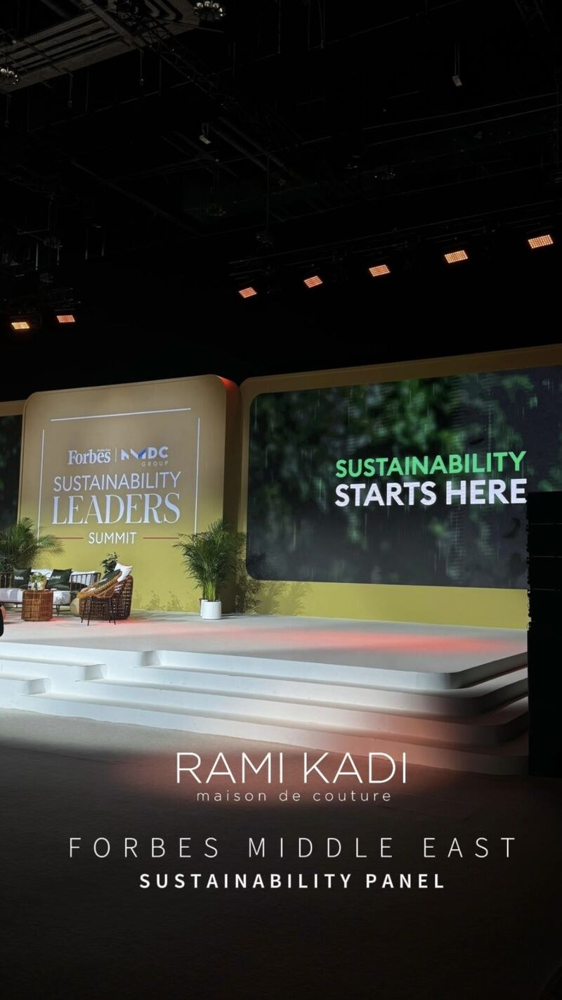
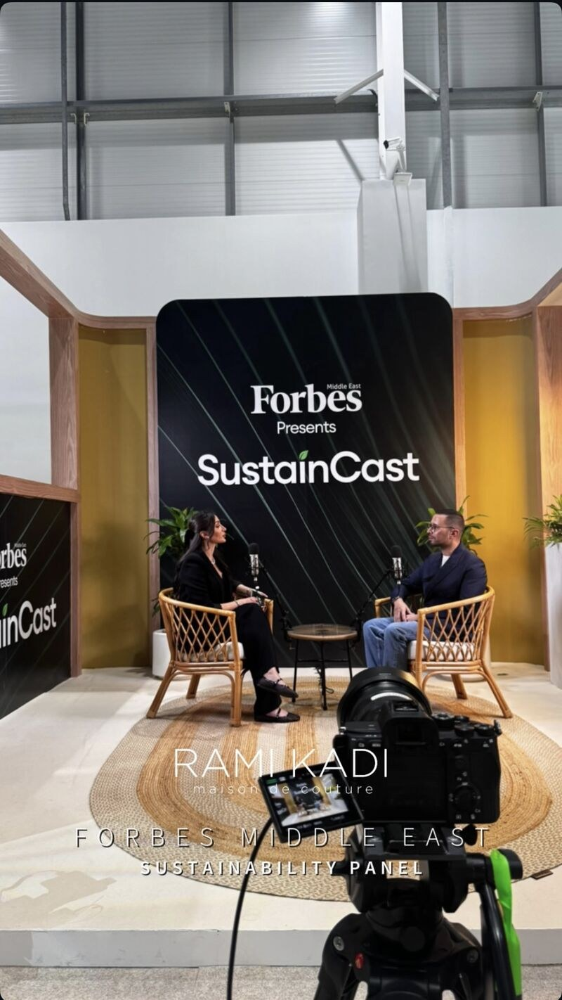

Field notes / 2024
Rami Kadi / Forbes Summit
I joined the Rami Kadi Maison de Couture team at the Forbes Middle East Sustainability Leaders’ Summit in 2024. These are a few moments from that experience.



Field notes / 2024
I joined the Rami Kadi Maison de Couture team at the Forbes Middle East Sustainability Leaders’ Summit in 2024. These are a few moments from that experience.

